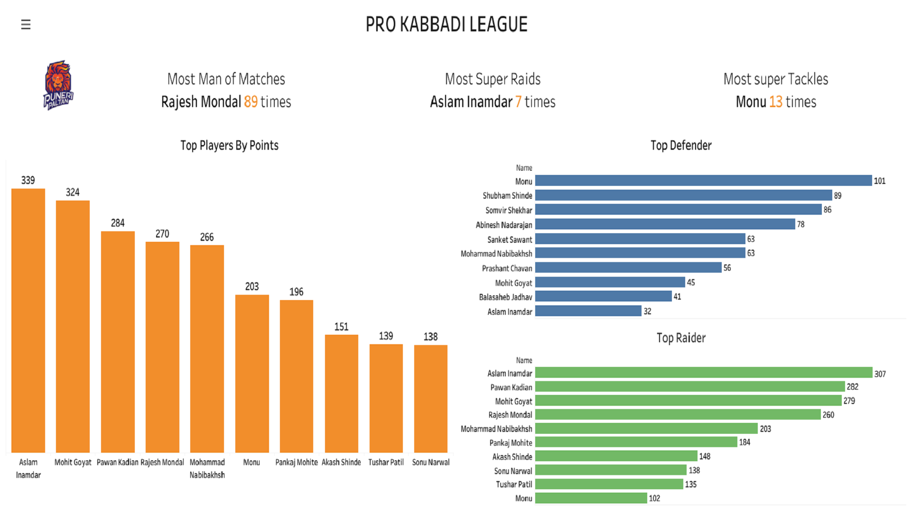

PRO Kabaddi League Analysis
Stages of Project
- Web Scrapping
- ETL pipeline Constuction
- Dashboard Building
Desciption
The working of the projects goes from scrapping the data to creating an ETL pipeline to store the data into the RDBMS to cleaning and tranformin the data before loadind it into tableau for preparation of visualizations.
- First step was to collect the data form the prokabbadi website : https://www.prokabaddi.com/ . The web scraping was carried out using python the was collected by fetch XHR api calls first all the links was tested using the postman than the links that give the desired output was used .First all the player_id of the players playing in the tournament were fetched then the using the player_id the the info of the players were extracted and stored into csv files .
- Second step was to costruct the ETL pipeline the data collected was then various transformation such as removing the nan values were applied on the data and then the data was stored on the RDBMS.
- Third step was to create the dashboard the dashboard was created using tableau public the data was imported and the important factors Team wise and tournament wise were extracted that is the top players by points, Top defenders ,Top radiers etc and the filter for team wise analysis and tournament wise was added